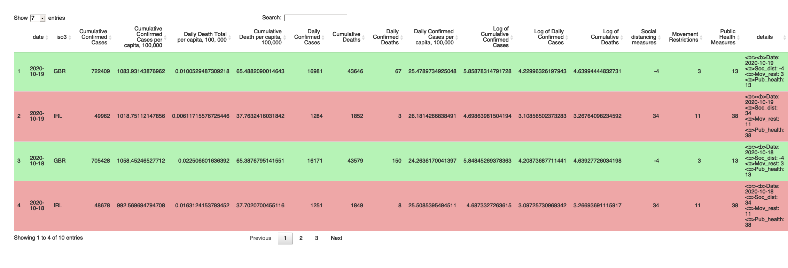

The R package covid19BFI is a container for the Covid19: The Battle for Independence application that provides access to an interactive and insightful application for compartive analysis between Ireland and the United Kingdom over the impact of coronavirus and the response to deal with pandemic from each government. Coronavirus has further reignited the discussion for Irish independence, given Ireland is split into two states - The republic of Ireland and Northern Ireland, there is now a direct case study with coronavirus response as the proxy for Ireland’s ability to stand completely united and independent of the UK, with this package providing access to the application that hands the user the data and the tools to make critically assess the responses between the two countries as well, as access the data and other tools to recreate the analysis.
You can install the development version from GitHub with:
# install.packages("devtools") devtools::install_github("etc5523-2020/r-package-assessment-samuellyu-2021")
covid19BFI provides acess to the data used to create the Covid19: The Battle for Independence application as well as tools to explore this, and any, dataset. Calling covid_data_uk_irl will provide the covid cases and deaths data that has been compiled for Ireland and the United Kingdom. In order to further explore this dataset, simply assign it to an object and then conduct the desired analysis. Tools that the package provides include a dt_styler( ) which is datatable style formatter that can be used with any two variables from any dataset.
library(covid19BFI) library(tidycovid19) library(dplyr) #> #> Attaching package: 'dplyr' #> The following objects are masked from 'package:stats': #> #> filter, lag #> The following objects are masked from 'package:base': #> #> intersect, setdiff, setequal, union library(covdata) #> #> Attaching package: 'covdata' #> The following object is masked from 'package:datasets': #> #> uspop library(tibble) options(digits = 2) data <- covid_data_uk_irl %>% arrange(desc(date)) %>% head(n=10) #Can use dt_styler to format the data according to key the specified key variables dt_styler(data,"iso3", "GBR", "IRL", "#b6f3b6", "#eea7a7", plength = 4, rownames = FALSE)

As shown, dt_styler( ) colors the rows according to the two key variables in the index column.